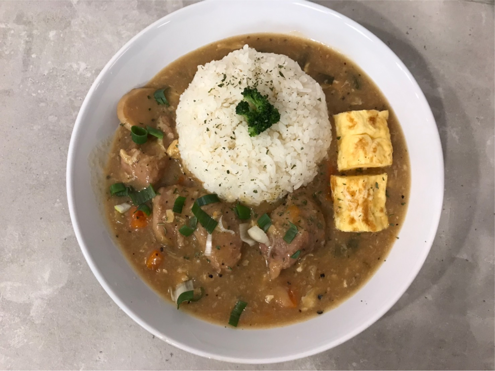
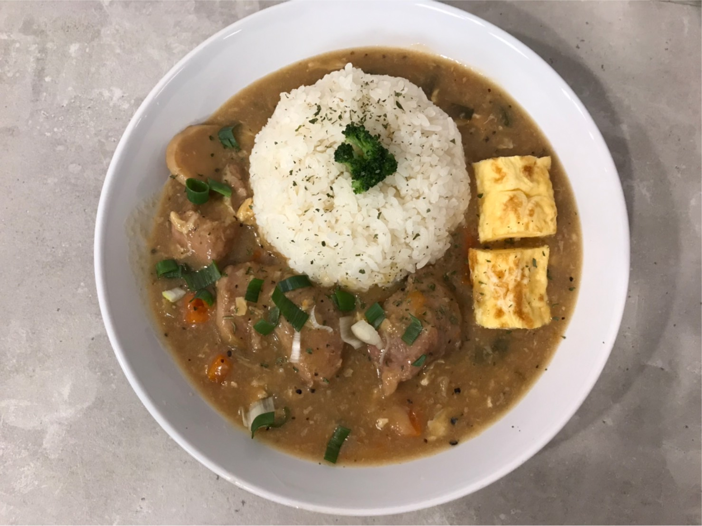
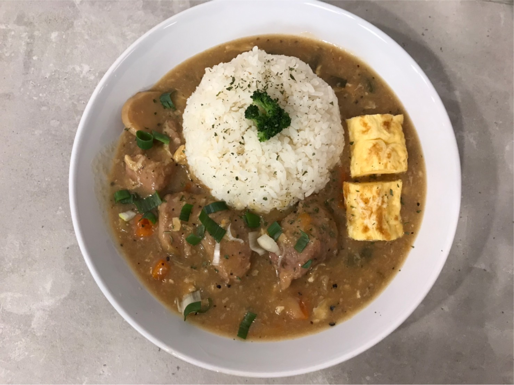

中原的美食太多，每天都好煩惱

千玖偎

新開的一間小店，裡面的裝潢小巧精緻(拍照很漂釀)，座位不太多，第一次去吃時吃的是醬香姑姑豬肉塊(╯·⚇·╰)120元， 很像咖哩飯的質地，偏稠，比燉飯還要再稀一點，飯量很多，正常女生的食量吃不完，裡面還有附檸檬水。整體來說是好吃的， 但不會想再回訪(((ㄚ不是說很好吃(‘⊙д-)，但想嘗鮮的話還是很推薦喔！
推薦指數：⭐⭐⭐ cp值：⭐⭐⭐⭐ 營業時間：無資訊